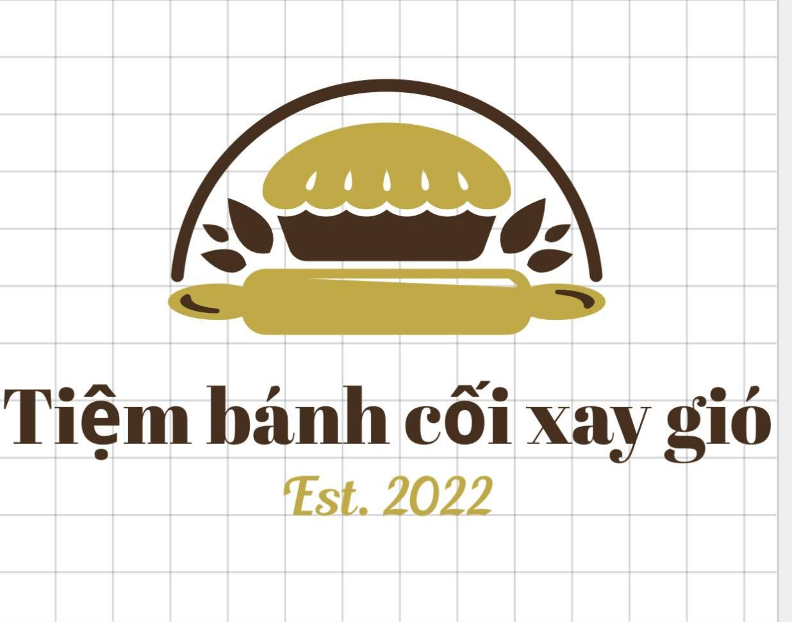
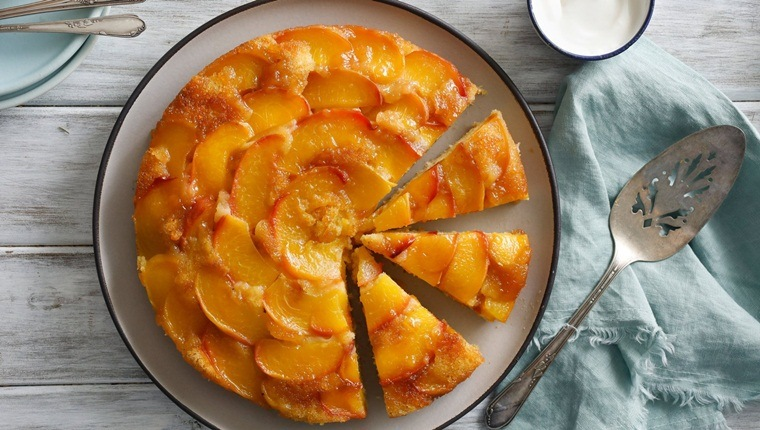

Các Loại Bánh
Giới thiệu
Món ăn Nổi Bật
Bánh Ngọt
Bánh Kem
Cùng Học Làm Bánh
Bánh Bông Lan
Bánh Gato
Liên hệ-CSKH
Góp ý
Cách làm bánh bông lan siêu ngon với nồi cơm điện
<
Bánh bông lan trứng muối
Nguyên Liệu
3 miếng phô mai “Con bò cười” (cắt đôi)
6 quả trứng gà ta
7-8 lòng đỏ trứng muối
3gr muối
20gr bột bắp
25gr bơ lạc
25gr đường (phần nhân)
120gr bột mì
120gr đường (phần cốt bánh)
240ml nước
Chà bông (nhiều hay ít tuỳ theo nhu cầu)
1 ít rượu Mai Quế Lộ (hoặc rượu trắng)
1 thìa cà phê bột nở
Các loại gia vị khác
Dụng cụ: nồi cơm điện, rây, dụng cụ đánh trứng,…
Dụng Cụ
Nồi cơm điện đường kính 21-23 cm
Máy đánh trứng
Phới lồng
Phới dẹt
Hướng dẫn
Bước 1: Đánh trứng và rây bột
Ngâm 6 quả trứng gà vào tô nước ấm trong 5 phút với tỉ lệ 2 cốc nước lạnh pha với 3 cốc nước sôi.
Trộn đều hỗn hợp 120gr bột mì, 20gr bột bắp với 1 thìa cà phê bột nở, rây mịn để bột không bị vón cục.
Đập trứng đã ráo nước vào tô.
Cho 120gr đường vào, đánh cho trứng nổi bông lên.
Nếu thấy trứng rớt thành dòng là đạt yêu cầu thành phẩm.
Bước 2: Trộn bột và nướng bánh bông lan trứng muối bằng nồi cơm điện
Chia bột thành 3 phần riêng biệt.
Rây từng phần vào tô trứng và trộn đều đến khi hết bột.
Lót giấy nến vào đáy nồi cơm điện, sau đó cho bột vào nồi.
Đậy nắp, chọn “Cook” và sau 10 phút thì chuyển qua “Warm”.
Đợi thêm 5-7 phút nữa thì bạn chuyển qua “Cook”.
Lặp lại thao tác trên khoảng 2-3 lần nữa.
Sau khoảng 45-60 phút, bạn có thể tắt nồi và kiểm tra bánh.
Nhấn ngón tay lên mặt bánh, nếu lõm vào và phồng lên ngay tức là bánh đã chín.
Nếu bánh chưa chín, bạn hãy bật “Cook” một lần nữa.
Bước 3: Đánh trứng và rây bột
Đầu tiên cần rửa sạch lòng đỏ trứng muối.
Cho lòng đỏ vào chén rượu và ngâm khoảng 5 phút để trứng hết mùi tanh.
Xếp trứng lên khay, phết 1 ít dầu ăn lên trứng.
Sau đó, bạn nướng trứng ở nhiệt độ 170 độ C trong khoảng 6 – 7 phút.
Nếu không có lò nướng, bạn có thể hấp cách thủy trứng trong khoảng 5 phút ở lửa vừa.
Bước 4: Cách làm sốt bánh bông lan trứng muối
Cho 25gr đường, muối và lòng đỏ trứng vào 1 tô lớn.
Đánh đều sao cho hỗn hợp hòa quyện vào nhau.
Tiếp theo, rây 25gr bột ngô vào và trộn đều.
Cho 240ml nước và 25gr bơ đã được đun chảy vào trộn đều cùng các hỗn hợp trên.
Lọc hỗn hợp sốt để sốt được mịn
Cho hỗn hợp vào 1 cái nồi, bắc lên bếp ở lửa nhỏ và khuấy đều cho đến khi hỗn hợp sệt lại.
Cuối cùng, chuẩn bị phần nhân chà bông, trứng muối, phô mai đã cắt đôi, các miếng xúc xích đã cắt nhỏ.
Bước 5: Hoàn tất quá trình
Cắt đôi bánh bông lan và phết 1 lớp sốt lên mặt bánh.
Lần lượt xếp phô mai và xúc xích lên trên.
Đặt nửa chiếc bánh còn lại lên trên nửa kia.
Phết sốt rồi cho chà bông và xúc xích lên để hoàn tất công việc.

Chúng tôi luôn muốn chia sẻ nhiều bí quyết làm bánh ngon vs mn
Hãy chia sẻ vs mọi người cách làm này nhé!!!